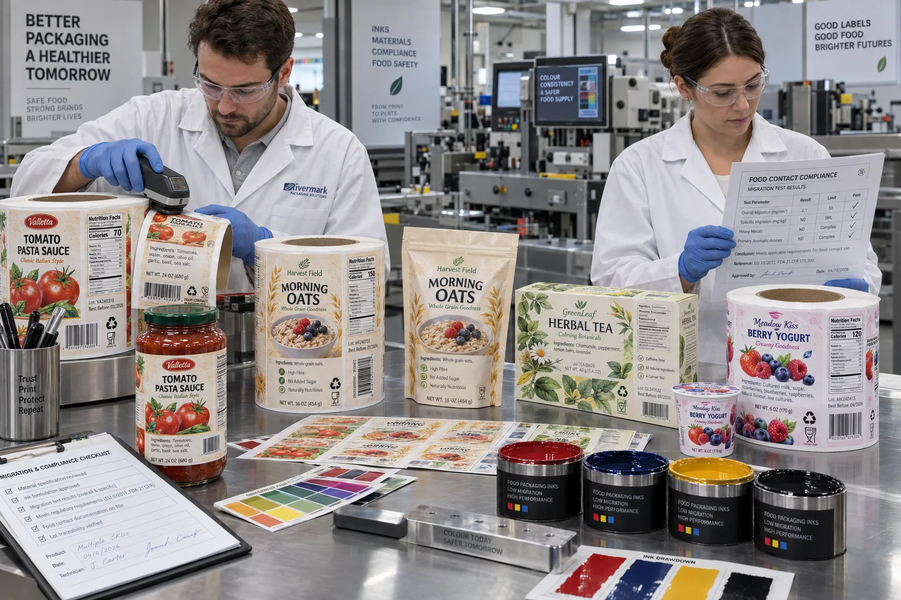

Short answer
Food-contact ink selection is a risk-control step, not a certificate for the finished package. Buyers need to define whether the print has direct or non-direct food contact, how components could migrate, what barrier sits between ink and food, and how the labels are printed, cured, rewound, stored and applied.
At the quote desk, “use food-grade ink” is one of those sentences that seems precise until we try to manufacture from it. Which food? Which market? Does the ink touch the product, sit behind a barrier or face the outside of a jar? Is the package heated, frozen or stored for a year? The noun is not the specification.
Why “low migration” is not the finish line
The European Printing Ink Association, EuPIA, states that it no longer uses “low migration ink” as a sufficient category. It instead refers to printing inks for food-contact materials and links them to good manufacturing practice, information exchange and assessment of the finished material. Suppliers may still use the older phrase commercially, but buyers should ask what it means for the exact product.
That distinction matters because migration can occur through more than direct touching. Components may pass through a substrate, transfer by gas phase, or set off from one printed surface to the reverse side when labels or packaging are stacked or wound in a roll.
| Possible route | Typical situation | Buyer question |
|---|---|---|
| Direct migration | Print can physically touch food | Was this ink system assessed for direct contact? |
| Through-substrate migration | Ink is outside a thin or porous package | What functional barrier exists? |
| Set-off | Printed labels or packs contact their reverse side in rolls or stacks | How are curing, winding and storage controlled? |
| Gas-phase transfer | Volatile components move within a closed pack | What are the food, time and temperature conditions? |
A composite inquiry: ink specified, package undefined
This is a composite planning example, not a claimed customer case. A snack company requests paper labels with “certified low-migration ink” for a pouch. The artwork and quantity are ready, but the buyer cannot confirm whether the label sits on the outside of a multi-layer barrier pouch or on an inner sachet that may contact oily food.
I used to think the cautious answer was simply to quote the most conservative ink available. That protects the quotation more than it protects the package. The correct next step is to stop and map the construction. A suitable ink on an unsuitable substrate, poorly cured and wound too tightly, does not become safe because its product sheet uses reassuring language.
The complete construction matters
- Face material: paper, film, metallized stock and coatings have different barrier behavior.
- Ink and varnish: every printed and unprinted coating in the system should be identified.
- Curing: UV dose, drying, press speed and maintenance affect residual components.
- Adhesive: it is also part of the label construction and may have its own limitations.
- Package: food type, fat content, storage time, temperature and contact geometry affect assessment.
Non-direct contact is not the same as no risk. It may provide a diffusion path long enough to control, but that conclusion belongs to the finished-pack assessment. Likewise, direct-contact printing should never be improvised by turning a normal decorative label inward.
What documentation can and cannot prove
| Document | Useful purpose | What it does not replace |
|---|---|---|
| Ink technical data | Identifies process, cure and intended application | Finished-package compliance assessment |
| Statement of composition | Supports downstream migration review | Testing under your actual use conditions |
| GMP statement | Shows the ink is made under a defined control framework | Correct press operation and curing |
| Migration test report | Provides evidence for defined samples and conditions | Different foods, barriers, time or temperature |
Factory-side view
The safest-sounding line on a quote is often the least useful
“Food-safe ink included” makes a quotation easy to approve. It also hides every condition the buyer actually needs to understand.
I would rather send one extra question about contact and storage than sell a confident adjective that nobody can trace back to a construction.
Where standard label inks may still be appropriate
A pressure-sensitive label applied to the outside of a rigid glass jar, with no foreseeable food contact and an effective container barrier, is a different case from print on a flexible inner wrapper. The correct answer is not to force every external jar label into the most restrictive direct-contact specification. Over-specification can add cost and reduce finish options without controlling a real exposure route.
The alternative wins when its intended use is properly documented. Compliance work should be conservative, not theatrical.
Buyer checklist before requesting a quote
- Identify the food, destination market and expected shelf life.
- Map every layer between the printed surface and the food.
- State whether direct contact, set-off or gas-phase transfer is foreseeable.
- Provide filling, heating, freezing and storage temperatures.
- Request the exact ink, varnish, face and adhesive construction.
- Agree who owns migration assessment and finished-pack testing.
- Keep approved documentation with the artwork revision and purchase order.
Read the official EuPIA food-contact material principles and its guidance on migration routes for the technical framework. For layout and mandatory-copy planning, continue with our Food Label Layout Requirements guide.
Frequently asked questions
What are food-contact printing inks?
They are inks designed for use on materials intended to contact food, under defined direct or non-direct contact conditions. Suitability still depends on the substrate, barrier, curing, set-off, food type and finished package assessment.
Does low-migration ink make a food label compliant?
No. EuPIA no longer treats low migration as a complete technical category. Ink selection is one control within a full packaging assessment that includes manufacturing practice, migration routes and intended use.
Can ordinary label ink touch food directly?
Do not assume so. Direct food contact creates a different exposure condition and requires a specifically assessed construction and documentation. Most decorative pressure-sensitive labels are designed for the non-food-contact side of a package.
What documents should a buyer request?
Ask for the exact ink and coating system, intended-contact statement, applicable declarations or statements of composition, curing requirements, migration assessment responsibilities and any limitations tied to food type, temperature or storage time.
Related label guides
- Labels for Compostable Packaging: Material Guide
- Peel-and-Reveal Labels: Extended Content Guide
- Scuff-Resistant Labels: Rub Testing and Finishes
Review the complete label construction
Send package photos, material details, finished label size, quantity by artwork, storage conditions and application method. We can review fit, material and production details before preparing a quote and digital proof.